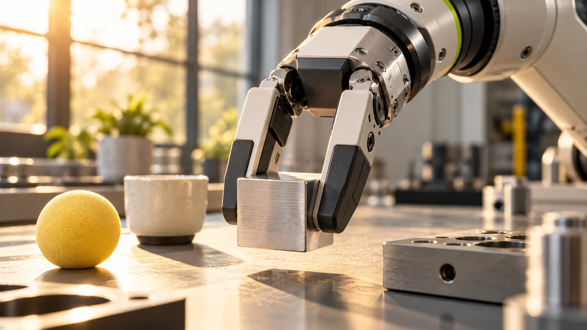

Evaluate the grasping task first. Hand complexity should serve the object set and research objective.
A dexterous hand can be a compelling part of a humanoid platform. But the decision starts with the objects and interactions, not the number of fingers. A project that studies human-like manipulation has different needs from one that repeatedly transfers a standard container between two fixtures.
Build an object set
Collect representative objects with different sizes, shapes, surfaces, and weights. Include awkward examples rather than only the easiest ones. Define how the robot will encounter each object and how it should leave it. The same object can present a very different problem when its starting pose changes.
Separate holding from manipulating
Picking up an object, rotating it within the hand, and using it as a tool are different requirements. Decide which actions the project actually needs. That distinction helps keep a shortlist focused and prevents an impressive capability from becoming a requirement without a practical reason.
Inspect the whole control path
Ask about the hand’s interface, sensing, calibration, and supported examples. Check how it connects mechanically and electrically to the chosen arm. A hand offered in a manufacturer’s catalog is not automatically compatible with every platform. Integration responsibilities should be explicit in the proposed configuration.

Measure repeatability and recovery
Run the same object set repeatedly and record successful outcomes, damaged objects, and human interventions. Include recovery from an unsuccessful grasp. The value of a manipulation system depends on what happens after a miss as well as what happens during its best demonstration.
Build an object card before selecting hardware
Give each representative object a simple record: dimensions, mass as measured for the trial, surface description, permitted contact areas, starting orientation, and desired final state. Add any project-specific restrictions, such as avoiding contact with a visible label or keeping the object upright. A photograph with reference measurements can help different team members discuss the same example. Keep the object set stable for an initial comparison, then introduce variation deliberately. This gives a supplier something concrete to evaluate and helps explain why a particular hand or gripper belongs on the shortlist. It also prevents the easiest objects from quietly becoming the entire test.
Match the evaluation to the intended manipulation
If the application only transfers a standard item, test the complete transfer and release. If the research question involves changing an object's orientation within a hand, make that behavior an explicit part of the trial. Do not infer it from a successful pickup. Describe whether objects arrive in a known pose, a fixture, or a varied arrangement, because the surrounding perception and planning work is part of the application. Compare candidates using the same starting conditions wherever practical. A dexterous hand may be interesting for exploring several interaction strategies, while a simpler mechanism may deserve evaluation for a narrower operation. The test should make that distinction understandable.
Include release, misses, and object condition
It is easy to focus on the moment an object leaves a table and overlook what happens next. Define a successful release: the object reaches the intended location, has the required orientation, and remains suitable for the next step. Record drops, incomplete releases, unexpected contact, and any visible changes to the object. Include the work required to clear a failed attempt and restore the starting conditions. Use appropriate objects and the supplier's procedures when planning the trial. The resulting log describes a complete interaction instead of collecting only successful grasp images. It can reveal that the difficult part of an application occurs at the destination rather than at pickup.
Treat the hand as part of an integrated platform
Ask who owns the connection between the hand, wrist, arm, power arrangement, controller, and application software. A product page can establish that a hand exists without establishing a supported configuration for your robot. Record the exact interface and mechanical arrangement proposed by the supplier, including any custom work. For a research team, decide whether developing that integration is part of the intended contribution or simply a dependency. Keep calibration and configuration records with the experiment. When comparing a new hand later, this documentation helps separate improvements in the end effector from changes in the arm behavior, object presentation, or control software around it.
Your next step.
- Create a representative object set.
- Define whether in-hand manipulation is necessary.
- Confirm mechanical, electrical, and software compatibility.
Sources & further reading
Primary sources and manufacturer documentation for the examples and further investigation. Recommendations in this article are HUMANOID’s editorial guidance.
RobotEra: official product range ↗Unitree: official humanoid hardware collection ↗Originally prepared and references reviewed: 24 October 2026. Expanded with practical guidance and original illustrations: 25 October 2026. Editorial archive date: 17 Aug 2026. This is original editorial content, not a record of a historical product launch, independent test, or purchase.